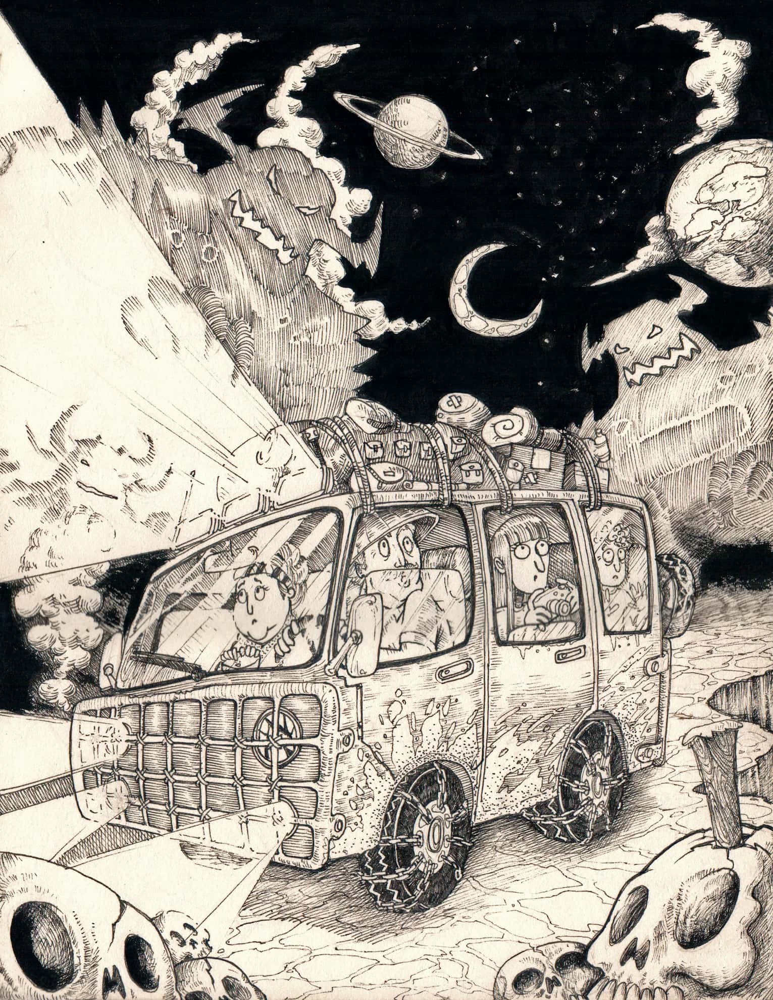
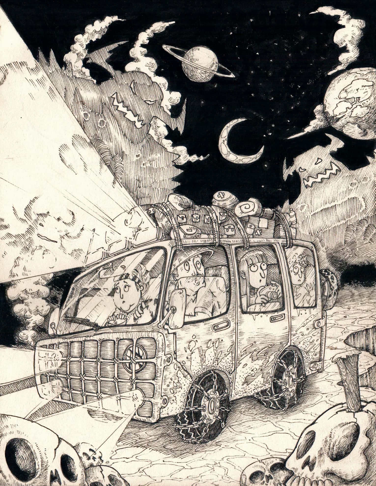

Acabemos con el Mito: La Oveja Negra
“Un futuro sin salida”, “esto no es una carrera seria”, “no puedes vivir de esto”, frases lanzadas comúnmente al viento, los diseñadores gráficos y otros miembros de la industria creativa o el arte escuchan constantemente frases que, en vez de motivarlos a seguir adelante, los estancan e impiden alcanzar sus metas.
Y no es precisamente gente foránea quien genera estos comentarios, sino personas que nos han visto crecer, sonreír y disfrutar de la vida. Así es, gente tan cercana a ti, como una lanza atravesando tu corazón, sientes la crítica y que te decepciona.
El Valor de lo Clásico: La Animación Análoga Como Herramienta Educativa
Vivimos en una sociedad de constante f lujo donde al igual que las personas, los estudios deben evolucionar. Pasó de ser animación análoga a digital, porque los tiempos lo ameritan. Sin embargo, me gustaría recalcar la importancia de los cimientos de este estudio.
Esta clase dejó una huella no solo para los estudiantes sino también para los docentes a cargo.

Influencia de la cultura oriental en los jóvenes y el diseño
Estamos en una era de cambios constantes en la cual los jóvenes se conectan a través de las redes sociales transformando la forma en la que se interactúa y donde la mayoría de las cosas que se consumen es porque han sido vistas en estas, permitiendo acceder a una gran diversidad cultural que antes era lejana. Un fenómeno que no puede pasar desapercibido es la influencia de la cultura oriental la cual ha captado la atención de los jóvenes alrededor del mundo trayendo un cambio en la música, el arte e incluso el todo el diseño.
Eventos
BAAAM! 2501
Feria del diseño
SD EXPO

 SD 2501
El Salón de Diseño de UniAutónoma es un espacio dedicado a la expresión artística de los estudiantes, donde se exponen composiciones como fotografías, cortos audiovisuales, ilustraciones en acrílico, acuarela y otras técnicas. Además de la muestra artística, se ofrecen talleres especializados en fotografía, diseño y dibujo, dirigidos por expertos invitados. Es una oportunidad única para que los estudiantes den a conocer su arte y talento, y se conecten con una comunidad creativa.
SD 2501
El Salón de Diseño de UniAutónoma es un espacio dedicado a la expresión artística de los estudiantes, donde se exponen composiciones como fotografías, cortos audiovisuales, ilustraciones en acrílico, acuarela y otras técnicas. Además de la muestra artística, se ofrecen talleres especializados en fotografía, diseño y dibujo, dirigidos por expertos invitados. Es una oportunidad única para que los estudiantes den a conocer su arte y talento, y se conecten con una comunidad creativa.
BAAAM! 2501
¡Asiste al Baaam!, los proyectos de grado para admirar Al finalizar cada semestre, ¡los estudiantes que están a punto de ser orgullosos egresados del programa de Diseño Gráfico de la Uniautónoma, tienen un lugar en el evento Baaam!, evento de acceso libre donde ellos exponen a jurados, estudiantes y al público en general sus capacidades y talentos, teniendo en cuenta lo aprendido a lo largo de la carrera. Los estudiantes tienen aquí la oportunidad para mostrar todo su potencial.
SD 2501
El Salón de Diseño de UniAutónoma es un espacio dedicado a la expresión artística de los estudiantes, donde se exponen composiciones como fotografías, cortos audiovisuales, ilustraciones en acrílico, acuarela y otras técnicas. Además de la muestra artística, se ofrecen talleres especializados en fotografía, diseño y dibujo, dirigidos por expertos invitados. Es una oportunidad única para que los estudiantes den a conocer su arte y talento, y se conecten con una comunidad creativa.